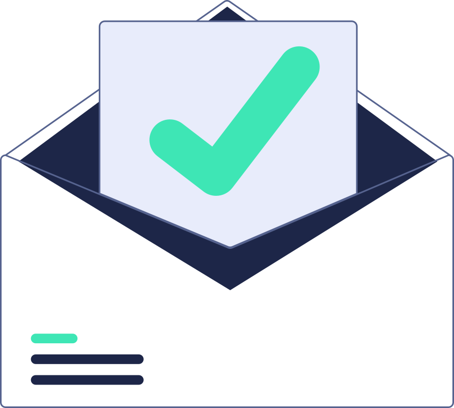
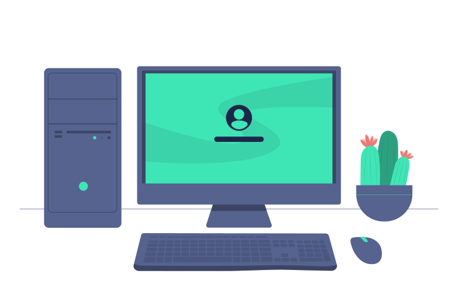
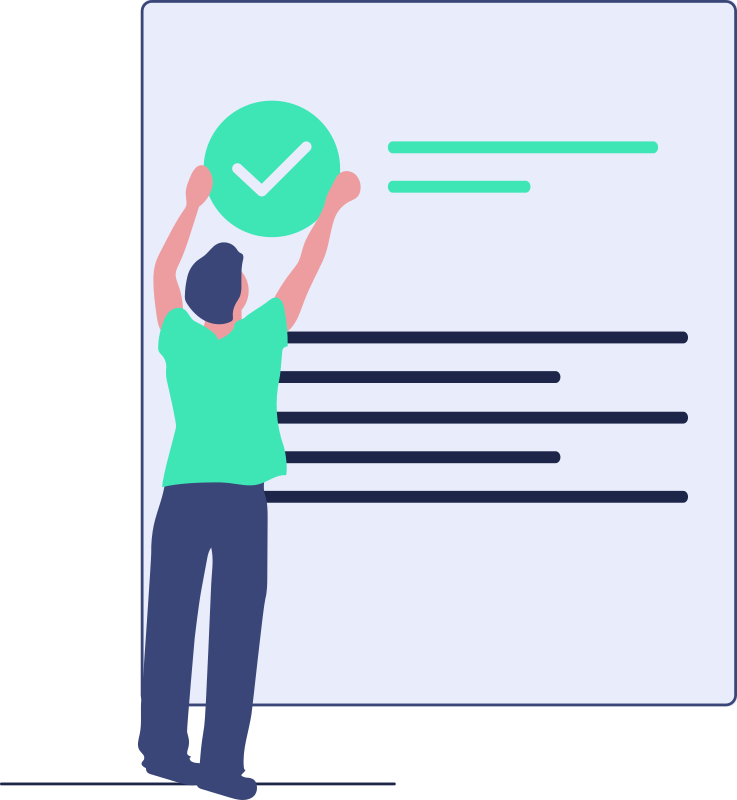
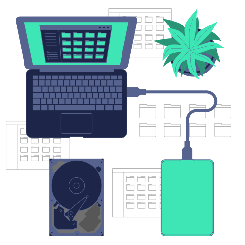

01Поняття документу▼
Документ — матеріальний або електронний об’єкт, що містить зафіксовану інформацію й має юридичну силу. Документи підтверджують факти, права й обов’язки: паспорт, диплом, договір, наказ, довідка.

Ключові поняття
- Документ
- зафіксована інформація з реквізитами, що має юридичну силу
- Документообіг
- рух документів в організації від створення до архіву
Корисні ресурси
Інструменти
02Призначення та класифікація документів. Реквізитиє матеріали▼
Документи класифікують за призначенням (організаційні, розпорядчі, довідково-інформаційні), походженням (внутрішні, вхідні, вихідні), формою (паперові, електронні). Реквізит — обов’язковий елемент документа: назва організації, дата, реєстраційний номер, заголовок, текст, підпис, печатка. Правила оформлення реквізитів в Україні задає ДСТУ 4163:2020.
Ключові поняття
- Реквізит
- обов’язковий елемент оформлення документа
- Розпорядчий документ
- наказ, розпорядження, постанова
- ДСТУ 4163:2020
- державний стандарт оформлення документів
Матеріали на сайті
Інструменти
03Загальні правила оформлення документів▼
Документи оформлюють на аркуші А4, шрифт Times New Roman 12–14 пт, поля: ліве 30 мм, праве 10 мм, верхнє й нижнє 20 мм. Текст має бути чітким, без помилок і зайвих слів; дати записують цифрами (14.11.2026).
Ключові поняття
- Бланк
- аркуш із заздалегідь надрукованими реквізитами
- Поля документа
- відступи тексту від країв аркуша
Корисні ресурси
- Горох — словник української мови — перевірка правопису й наголосів
Інструменти
04Стиль ділового листування▼
Діловий лист — офіційний, ввічливий і стислий: звертання, суть у першому абзаці, конкретні факти й дати, підпис з посадою та контактами. В електронному листі важлива зрозуміла тема листа і доречні вкладення з нормальними назвами файлів.

Ключові поняття
- Офіційно-діловий стиль
- стиль документів: точність, стислість, без емоцій
- Етикетні формули
- «Шановний…», «З повагою…»
Корисні ресурси
- Горох — словник — перевірка слів і синонімів
Інструменти
05Технічні та програмні засоби обробки документів та інформації▼
Технічні засоби: комп’ютер, принтер, сканер, БФП, ксерокс, шредер. Програмні: текстові процесори (Word, Google Документи, LibreOffice Writer), табличні процесори, PDF-редактори, програми розпізнавання тексту (OCR), хмарні сховища.

Ключові поняття
- БФП
- багатофункціональний пристрій: принтер + сканер + копір
- OCR
- розпізнавання тексту на скані чи фото
- формат документа, що однаково виглядає на всіх пристроях
Інструменти
06Системи управління електронними документами▼
Системи електронного документообігу (СЕД) дозволяють створювати, погоджувати, підписувати й зберігати документи без паперу. Приклади в Україні: «Вчасно», M.E.Doc, «Мегаполіс.Документообіг», державна СЕВ ОВВ для обміну між органами влади.

Ключові поняття
- СЕД
- система електронного документообігу
- Маршрут погодження
- послідовність осіб, які переглядають і візують документ
Корисні ресурси
- Вчасно — популярний сервіс електронного документообігу
Інструменти
07Електронний документ, його ознаки і правовий статус▼
Електронний документ — документ, інформацію в якому зафіксовано в електронній формі, з обов’язковими реквізитами та електронним підписом. За законом він має таку саму юридичну силу, як паперовий. Оригінал електронного документа — це сам файл з підписом.
Ключові поняття
- Електронний документ
- документ в електронній формі з реквізитами й підписом
- Юридична сила
- здатність документа бути доказом і підставою для дій
Корисні ресурси
- Закон «Про електронні документи та електронний документообіг» — визначення та правовий статус
08Зберігання та передавання електронних документів, забезпечення їх конфіденційності▼
Документи зберігають на захищених серверах і в хмарі з резервними копіями. Конфіденційність забезпечують розмежування прав доступу, шифрування, паролі на архіви, захищені канали передавання. Строки зберігання документів визначаються законодавством.

Ключові поняття
- Резервна копія
- запасна копія даних на випадок втрати
- Права доступу
- хто може переглядати, редагувати чи видаляти документ
- Шифрування
- перетворення даних на нечитабельні без ключа
Інструменти
09Електронний цифровий підпис▼
Кваліфікований електронний підпис (КЕП, раніше ЕЦП) підтверджує автора документа й гарантує, що після підписання документ не змінено. В Україні підпис можна отримати в «Дії» (Дія.Підпис), у банку чи в кваліфікованого надавача довірчих послуг.
Ключові поняття
- КЕП
- кваліфікований електронний підпис
- Дія.Підпис
- електронний підпис у застосунку «Дія»
- Надавач довірчих послуг
- організація, що видає ключі й сертифікати
Корисні ресурси
- Закон «Про електронну ідентифікацію та електронні довірчі послуги» — повний текст
- Центральний засвідчувальний орган — перевірка та підписання документів онлайн
Інструменти
10Особистий та відкритий ключі▼
Електронний підпис працює на асиметричному шифруванні: є пара ключів. Особистий (приватний) ключ має лише власник і ним підписує документ; відкритий ключ доступний усім і дозволяє перевірити підпис. Особистий ключ не можна передавати нікому — це як власноручний підпис.
Ключові поняття
- Особистий ключ
- секретний ключ для створення підпису
- Відкритий ключ
- ключ для перевірки підпису, доступний усім
- Сертифікат
- документ, що пов’язує відкритий ключ з особою
Корисні ресурси
- Вікіпедія: Асиметричні алгоритми шифрування — як працює асиметричне шифрування
Інструменти
11Тематичне оцінюванняатестація▼
Повтори: поняття документа й реквізитів, класифікацію, правила оформлення, діловий стиль, засоби обробки документів, СЕД, правовий статус е-документа, КЕП і пари ключів.

Перевір себе з розділу 11
10 випадкових карток із ключовими поняттями розділу. Що не згадав — підкажемо, де повторити.
🃏 Почати картки